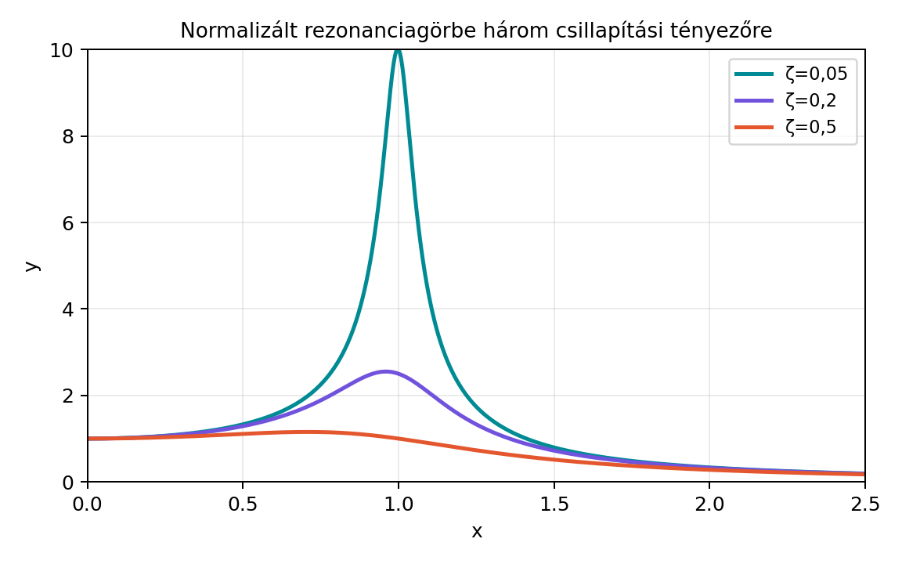

Amikor egy autó áthajt egy fekvőrendőrön, a karosszéria néhány
másodpercig leng, majd megnyugszik. Amikor rádiót hangolunk, egy állomás
kiválasztásakor egy áramkör éppen a kívánt frekvencián erősödik fel. A
hinta leng, a hangszóró membránja rezeg, az épület enyhén kileng a
szélben. Ezek mind rezgések, és mind ugyanarra a matematikai szerkezetre
vezetnek:
37.3.2 Szemléletes kép: a
tömeg–rugó–csillapító rendszer
Képzeljünk el egy
tömegű testet, amely egy
rugóállandójú rugón függ, és egy olajos csillapító dugattyú is hat rá. A
test egyensúlyi helyzetétől mért kitérését jelölje
.
A rugóerő a Hooke-törvény szerint
,
a csillapító erő pedig a sebességgel arányos, azzal ellentétes irányú:
,
ahol
a csillapítási tényező (damping coefficient). Newton második törvénye
szerint
azaz
Ez az egyenlet a csillapított szabad rezgés
egyenlete. A gyakorlatban a mennyiségek mértékegységei:
,
,
,
.
37.3.3 Csillapított szabad rezgés:
definíciók és esetek
Definíció (sajátkörfrekvencia, csillapítási arány, kritikus
csillapítás). A
egyenlethez tartozó csillapítatlan
sajátkörfrekvencia (natural angular frequency)
a csillapítási arány (damping ratio)
a kritikus csillapítási tényező pedig
A definícióból közvetlenül
.
A karakterisztikus egyenlet
amelynek gyökei
A gyökök jellege szerint három esetet különböztetünk meg.
Az alábbi ábra a három esetet a lentebbi példa adataival
(
rad/s,
m,
)
veti össze: gyenge csillapításnál
()
a test a nyugalmi helyzet körül csillapodva leng, kritikus
()
és erős
()
csillapításnál lengés nélkül tér vissza, erős csillapításnál lassabban.
A jobb panel a karakterisztikus gyököket mutatja: a komplex gyökpár
-nél
a
pontban egybeesik, majd a valós tengelyen szétválik.
Statikus változat (mint a PDF-ben)
Erős, kritikus és gyenge csillapítás,
(számított modellgörbék)
Tétel (a csillapított szabad rezgés megoldása). A
fenti egyenlet általános megoldása:
Erős csillapítás
():
két különböző negatív valós gyök van,
,
és
Kritikus csillapítás
():
egyetlen valós gyök van,
,
és
Gyenge csillapítás
():
komplex gyökpár van,
és a megoldás
Itt
a csillapított körfrekvencia (damped angular
frequency),
pedig a csillapított periódusidő.
Bizonyítás. Az exponenciális próbafüggvényt,
,
helyettesítsük az egyenletbe. Mivel
és
,
kapjuk:
Az
tényező sohasem nulla, így éppen a karakterisztikus egyenletet kapjuk.
Valós, különböző gyökök esetén
és
lineárisan független megoldások, tehát az általános megoldás
.
Ha
,
akkor
,
így csak egy exponenciális megoldásunk van:
.
A másik független megoldás
,
mert
és így
Mivel
és
,
mindkét zárójel nulla, tehát
valóban megoldás.
Gyenge csillapításnál a gyökök
Az általános komplex megoldás
Az Euler-formulával ez átírható valós alakba:
ahol
és
valós konstansok, ha a kezdeti feltételek valósak. ∎
Példa (gyengén csillapított rugó). Legyen
,
,
,
és a kezdeti feltétel
,
.
Először a paraméterek:
Gyenge csillapítás van, ezért
A megoldás alakja
A kezdeti feltételből
.
Deriváljuk a megoldást a szorzat- és láncszabállyal:
Így
,
tehát
A teljes megoldás:
Ellenőrzés visszahelyettesítéssel:
,
.
A burkológörbe
,
tehát a lengés körülbelül
időállandóval cseng le.
37.3.4 Gerjesztett rezgés és a
rezonanciagörbe
Most adjunk külső harmonikus erőt a rendszerhez:
A teljes megoldás a homogén rész (tranziens) és egy partikuláris
megoldás (állandósult) összege. A homogén rész gyenge csillapításnál
exponenciálisan lecseng, így hosszú idő után a stacionárius
(állandósult) megoldás dominál. Ezt a Komplex számok a gyakorlatban: forgatás, fázorok és
polinomok gyökei alfejezet fázoros módszerével gyorsan
megkapjuk.
Tétel (gerjesztett rezgés állandósult megoldása). A
fenti egyenlet stacionárius megoldása
ahol a fáziskésés
A
a főértéket jelöli, tehát
a megfelelő síknegyedben van:
szokásos fizikai esetben.
Levezetés. Helyettesítsük a valós egyenletet komplex
egyenletre:
Keressük a megoldást
alakban, ahol
komplex amplitúdó. Ekkor
és
.
Behelyettesítve:
Az exponenciális tényezővel egyszerűsítve
Írjuk a nevezőt exponenciális alakba:
Ekkor
és a valós megoldás
ami éppen a tétel állítása,
jelöléssel. ∎
Vezessük be a dimenziótlan frekvenciát és a statikus kitérést:
A stacionárius amplitúdó
A nevezőt
jelöli. A maximum helyét deriválással kapjuk:
Ha
,
akkor van pozitív szélsőértékhely:
Ezen a helyen az amplitúdó maximuma
Kis csillapításra
()
,
tehát a csúcs igen nagy lehet.

Normalizált rezonanciagörbe három
csillapítási tényezőre - Az amplitúdó A(ω)/A_st =
1/gyök((1-r2)2 + (2 ζ r)^2), ahol r=ω/ω0. A görbék rendre
ζ=0,05; 0,2; 0,5. A csúcs csak ζ<1/√2 esetén van a 0-tól különböző
r=√(1-2ζ²) helyen.
A fenti ábra mutatja a rezonanciagörbét: a vízszintes tengelyen
fut, a függőlegesen a normalizált amplitúdó
.
Minél kisebb a csillapítás, annál élesebb és magasabb a csúcs.
Definíció (jósági tényező). A rezonancia élességét a
jósági tényező (quality factor)
jellemzi, ahol
a rezonanciagörbe fél-teljesítményhez tartozó szélessége. Kis
csillapításra
Példa (gerjesztett amplitúdó fázorral). Folytassuk
az előző példát:
,
,
,
és hasson
erő
frekvenciával. Számoljuk ki az állandósult rezgést.
Tehát
Ellenőrzés nagyságrenddel: a statikus kitérés
,
és
miatt az erősítés körülbelül
-szeres,
tehát a kapott
elfogadható.
Ha nincs csillapítás
(),
és a gerjesztő frekvencia közel van, de nem egyenlő a
sajátfrekvenciával, a tranziens és a stacionárius rész interferenciája
lebegést (beat) hoz létre. Tekintsük a nyugalmi kezdeti
feltételű megoldást
esetén:
A koszinuszok különbségére vonatkozó azonosság szerint
A második tényező gyors rezgést ad; az első tényező lassan változó
burkológörbét (amplitúdója
),
amelynek periódusa
.
Például ha egy hangot 440 Hz és 442 Hz frekvenciájú összetevők keltenek,
a lebegés frekvenciája
,
tehát másodpercenként kétszer erősödik és halkul a hang.
37.3.6 RLC-kör és
mechanikai–elektromos analógia
Egy soros RLC-körben a
töltésre a huroktörvény szerint
ahol
az induktivitás,
az ellenállás,
a kapacitás,
a gerjesztő feszültség. Ez pontosan ugyanolyan alakú, mint a mechanikai
rezgés egyenlete. Az elektrotechnikában a képzetes egység jelölése
gyakran
;
ebben a könyvben az
jelölést használjuk.
A megfeleltetés:
Mechanikai mennyiség
Elektromos mennyiség
kitérés
töltés
sebesség
áram
tömeg
induktivitás
csillapítási tényező
ellenállás
rugóállandó
gerjesztő erő
feszültség
Az elektromos sajátkörfrekvencia
a csillapítási arány pedig
Harmonikus gerjesztésnél,
,
az állandósult töltésamplitúdó ugyanolyan rezonanciagörbét követ, mint a
mechanikai esetben. Az áramra az impedancia
és az áramamplitúdó maximuma éppen
környékén van, mert ott az impedancia abszolút értéke minimális.
37.3.7 Valós életbeli alkalmazás:
autó lengéscsillapítója és rádió hangolókör
37.3.7.1 Autó lengéscsillapító
Egy autó futóművét durva közelítéssel negyedautó-modellként
kezelhetjük. Legyen a kerékre jutó tömeg
,
a rugóállandó
,
a lengéscsillapító csillapítási tényezője pedig
.
Ezek a számok reális nagyságrendű modellbecslések, nem mérési
adatok.
A sajátkörfrekvencia:
A kritikus csillapítás és a csillapítási arány:
A csillapított frekvencia:
A
közötti érték a gyakorlatban jó kompromisszum: a karosszéria gyorsan
lecsillapodik, de nem válik túlságosan keménnyé. Ha
sokkal kisebb lenne, az autó hosszan himbálózna; ha sokkal nagyobb, a
futómű átengedné az útegyenetlenségeket, és kényelmetlenül kemény lenne.
A modell korlátja, hogy a valódi futómű nemlineáris rugókat, gumi
alkatrészeket és alapgerjesztést is tartalmaz.
37.3.7.2 Rádió hangolókör
Egy rádió hangolókörében legyen
és
,
az ellenállás pedig
.
A rezonanciafrekvencia
A csillapítási arány:
A jósági tényező közelítőleg
A fél-teljesítményszélesség
Ez azt jelenti, hogy a kör csak a kívánt állomás frekvenciája körüli
keskeny sávot erősíti fel, így a szomszédos állomások elnyomhatók. A
modell korlátja, hogy a tekercs és a kondenzátor veszteségei miatt a
tényleges
kisebb lehet.
A Tacoma Narrows híd 1940-es károsodását gyakran
emlegetik rezonanciaként, de a mai mérnöki értelmezés szerint ott
aeroelasztikus instabilitás, nem egyszerű lineáris rezonancia volt. A
levonható tanulság mégis fontos: ha egy rezgő szerkezet csillapítása
kicsi, a periodikus gerjesztés hatására igen nagy amplitúdók
alakulhatnak ki.
37.3.8 Számolási recept
37.3.8.1 Csillapított szabad rezgés
megoldása
Írd fel az egyenletet
alakban.
Számítsd ki
és
értékét.
Írd fel a karakterisztikus egyenletet és oldd meg.
A
értéke alapján válassz a három eset közül: erős, kritikus vagy gyenge
csillapítás.
Írd fel az általános megoldást a megfelelő két konstanssal.
Helyettesítsd be a kezdeti feltételeket
és
értékére; deriválás után oldd meg a kétismeretlenes
egyenletrendszert.
Ellenőrizd a megoldást visszahelyettesítéssel és a kezdeti
feltételek teljesülésével.
Ha a rezonanciacsúcsot keresed, számítsd ki
értékét, feltéve hogy
.
37.3.9 Tipikus hibák
A csillapított frekvencia helyett a csillapítatlan
frekvenciát használják. Ha
és
,
akkor a csillapított frekvencia
,
nem pedig
.
Kritikus csillapításnál elfelejtik a
tagot. Ilyenkor az általános megoldás
;
ha csak az exponenciális tagot írják fel, nem tudnak két független
kezdeti feltételt kielégíteni.
A rezonanciafrekvencia tévesen mindig
.
A kitérésamplitúdó maximuma csillapított rendszerben
,
és csak
esetén van nullától különböző csúcs.
A fázisszög rossz kvadránsban való megadása. Ha
,
az egyszerű
képlet negatív szöget ad; a helyes értékhez a kvadránst is figyelembe
vevő
függvény (Pythonban numpy.arctan2) kell.
Elektromos analógiában a soros és párhuzamos RLC-kör
keverése. Soros körnél az áram közös, és az impedanciák
összeadódnak; a mechanikai analógia itt a soros körre vonatkozik.
Párhuzamos körnél a feszültség közös, és az admittanciák adódnak
össze.
37.3.10 Önellenőrzés
Az
egyenlet milyen csillapítású? Oldd meg általánosan.
Határozd meg
értékét, ha
és
.
Írd fel az
egyenlet stacionárius amplitúdójának képletét.
Mekkora közelítőleg a jósági tényező, ha
?
Milyen feltétel mellett van a rezonanciagörbének
maximuma?
Add meg a soros RLC-kör rezonancia-körfrekvenciáját.
37.3.11 Feladatok
1. feladat (A). Oldd meg az
egyenletet az
,
kezdeti feltételekkel, és állapítsd meg a csillapítás típusát.
2. feladat (A). Határozd meg a kritikus csillapítási
tényezőt, ha
és
.
3. feladat (B). Gerjesztett rezgés:
.
Add meg az állandósult megoldás amplitúdóját és fáziskésését.
4. feladat (B). Egy soros RLC-kör elemei:
,
,
.
Számítsd ki a rezonanciafrekvenciát, a csillapítási arányt és a közelítő
jósági tényezőt.
5. feladat (C). Bizonyítsd be, hogy a gerjesztett
rezgés amplitúdójának maximuma
helyen van, ha
.
6. feladat (D). Egy mosógép dobjának rezgését
modellezzük az
,
,
paraméterekkel. A kiegyensúlyozatlanságból származó gerjesztő erő
amplitúdója
.
Becsüld meg a rezonancián fellépő kitérésamplitúdót, és értelmezd, miért
fontos, hogy a gép az indítás során viszonylag gyorsan áthaladjon a
rezonanciafrekvencián.
37.3.12 Megoldások
37.3.12.1 Önellenőrzés –
válaszok
,
tehát kritikus csillapítás;
.
.
,
ahol
.
.
A feltétel
.
.
37.3.12.2 1. feladat
Az egyenlet:
.
A karakterisztikus egyenlet
amelynek gyökei
Gyenge csillapítású rendszer,
,
.
Az általános megoldás
Behelyettesítve
:
.
Deriváljuk:
A
időpontban:
Tehát a megoldás
Ellenőrzés:
,
és
37.3.12.3 2. feladat
A kritikus csillapítási tényező
37.3.12.4 3. feladat
Az egyenlet
.
Azonosítva:
,
,
,
,
.
A nevező:
Az amplitúdó
A fáziskésés
Tehát
Ellenőrzés: a statikus kitérés
,
,
tehát az erősítés valamivel nagyobb 1-nél; a kapott
reális.
37.3.12.5 4. feladat
A rezonancia-körfrekvencia:
A csillapítási arány:
A jósági tényező közelítőleg
37.3.12.6 5. feladat
A normalizált amplitúdó négyzetének nevezője
Deriváljuk:
A kritikus pontok:
,
illetve
Ha
,
akkor
,
tehát van pozitív kritikus pont:
A deriváltat
alakban is írhatjuk. Ezért
esetén
,
esetén
:
a
a
félegyenesen
-ig
csökken, utána nő, tehát
-ben
globális minimuma van, és az
amplitúdónak itt globális maximuma. Ha
,
akkor
minden
-ra,
és a maximum az
-ban
van (nincs rezonanciacsúcs). A maximális amplitúdót behelyettesítéssel
kapjuk:
tehát
Ezzel az állítást beláttuk.
37.3.12.7 6. feladat
A sajátkörfrekvencia:
A csillapítási arány:
A statikus kitérés:
Rezonancián a becsült amplitúdó:
A kitérés tehát közel háromszorosa a statikus kitérésnek. A mosógép
indításakor a dob fordulatszáma áthalad a 7 Hz körüli rezonancián; minél
gyorsabban halad át ezen a tartományon, annál kevesebb ideig van kitéve
a nagy amplitúdójú lengésnek. Ezért a gyártók a
fordulatszám-szabályozást úgy tervezik, hogy a rezonanciazónát gyorsan
átszelje. A modell korlátja, hogy a valódi mosógép több szabadsági fokú,
és a beton ellensúly, a padló, valamint a gumi lengéscsillapítók
viselkedése nemlineáris.
37.3.13 Rövid összefoglaló
A csillapított szabad rezgés egyenlete
.
A
csillapítatlan sajátkörfrekvenciával és a
csillapítási aránnyal az egyenlet megoldása három esetre bomlik: erős
csillapításnál két negatív valós exponenciális, kritikus csillapításnál
,
gyenge csillapításnál pedig
Harmonikus gerjesztésnél
esetén az állandósult megoldás fázorral
,
ahol
A levezetések a klasszikus differenciálegyenlet-elmélet standard
eredményei; ezeket tankönyvi szinten tárgyalja például Boyce–DiPrima
vagy a MIT 18.03 kurzusa, de itt nem hivatkozunk konkrét oldalszámra
vagy kiadásra. Az autó- és mosógép-paraméterek modellbecslések, nem
mérési adatok; a Tacoma-hídra vonatkozó megjegyzés a mérnöki irodalom
óvatos értelmezését követi, de történeti részletek nem képezik a
tananyag központját.